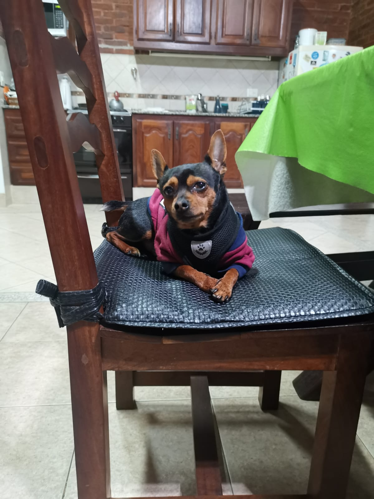
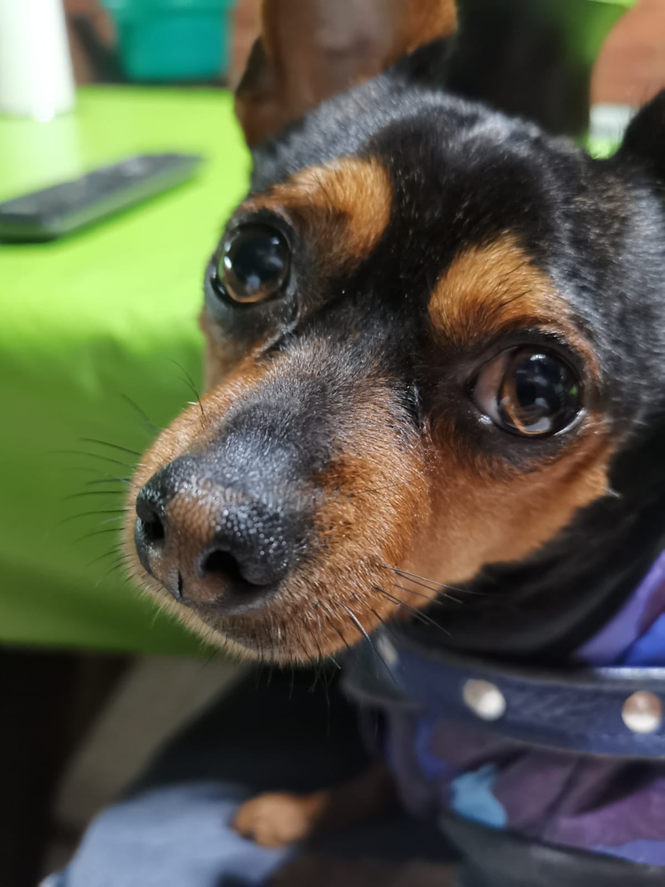
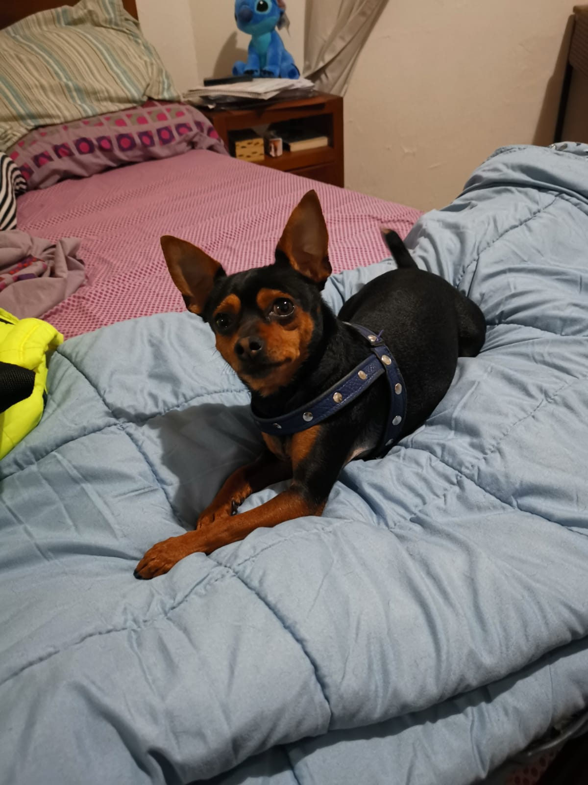
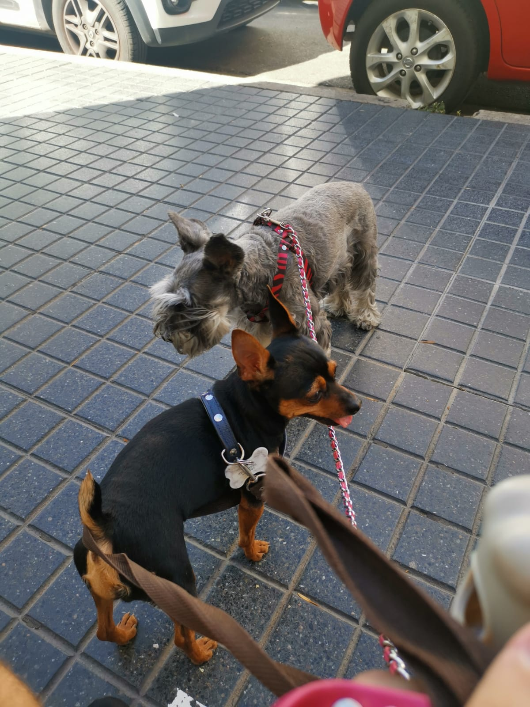

La vida de Rocco
Rocco nació en un cálido hogar de Buenos Aires en septiembre de 2018. Desde el principio, quedó claro que Rocco era un Pinscher especial. Su dueño, Aldo González, lo recibió con brazos abiertos y supo de inmediato que este perrito tenía algo especial. Su pelaje brillante y su mirada inteligente prometían un futuro brillante.
A medida que Rocco crecía, desarrolló un gusto muy particular por el pollito. No importaba si era asado, al horno o a la parrilla; Rocco simplemente adoraba el sabor del pollo. Cada vez que Aldo cocinaba pollo, Rocco estaba allí, con sus orejas puntiagudas en alerta y su cola agitándose de emoción. Este amor por el pollito se convertiría en una de las características más entrañables de Rocco.
Rocco disfrutaba de los paseos por las calles de Buenos Aires. Le encantaba sentir el viento en su pelaje y explorar los diversos parques y plazas de la ciudad. Su energía inagotable y su curiosidad lo convirtieron en un compañero de paseo perfecto para Aldo, y juntos exploraron muchos rincones de la ciudad.
A medida que Rocco maduraba, desarrolló un interés peculiar por la política argentina. A menudo, se sentaba frente al televisor cuando Aldo sintonizaba las noticias políticas, y parecía prestar una atención especial a los discursos de los líderes políticos. Su mirada fija y su oído atento no pasaron desapercibidos para Aldo, quien bromeaba diciendo que Rocco estaba destinado a ser un político en ciernes.